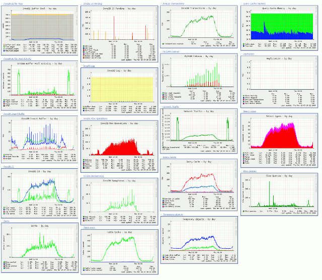

Kjell-Magne Øierud :: Bliki
Thoughts on software development
2009-02-13 16:14 CET
Improved Munin Graphs for MySQL
Inspired by Xaprb's improved graphs for Cacti, I wrote a plugin that creates similar graphs for Munin.
Hopefully the plugin will be included by the Munin project. But until then, or if you want the latest version, you can find download instructions on my projects page.
Some features:
- Data collected from MySQL is stored in shared memory, thus avoiding unnecessary server requests.
- Easy to create new graphs by adding a graph definition to the plugin.

(Thanks to Bart van Bragt for the graphs)